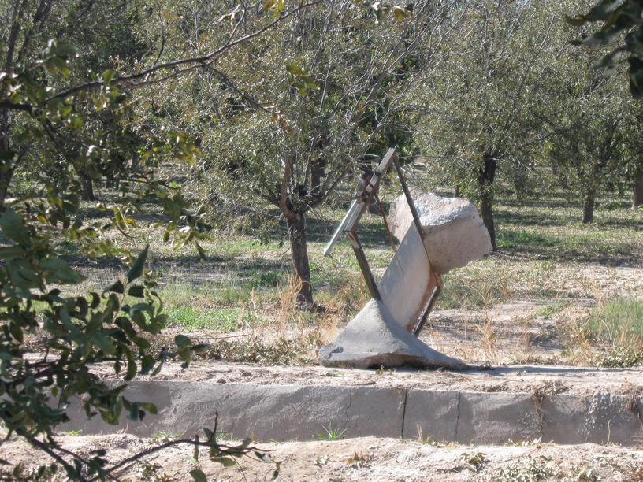

17 Nov 2008, El Paso, TX
I did not ride 90 miles today. I did ride about 50, and I rode through El Paso, which is a bigger city than I had expected (1/2 million).
I'm staying with a Warm Showers contact, Roy Vantine. He's retired military & he & his wife are avid cyclists. Nice people, good food, the usual stuff I guess.
Today was very flat until I started out of El Paso. It was somewhat unpleasant because I ended up on a busy street during rush hour (which begins at 4 here). The mountains around El Paso are pretty, too.
